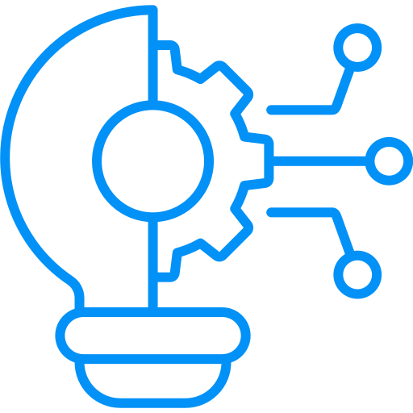

COMPROMISO CON LA CALIDAD
Nos aseguramos de que cada reparación y servicio cumpla con los más altos estándares de calidad.

INTEGRIDAD Y HONESTIDAD
Creemos en la transparencia y la honestidad en todas nuestras interacciones.

INNOVACIÓN
Nos mantenemos al día con las últimas tecnologías y técnicas para ofrecer soluciones innovadoras.

ATENCIÓN AL CLIENTE
Tu satisfacción es nuestra prioridad. Ofrecemos un servicio personalizado para satisfacer tus necesidades específicas.